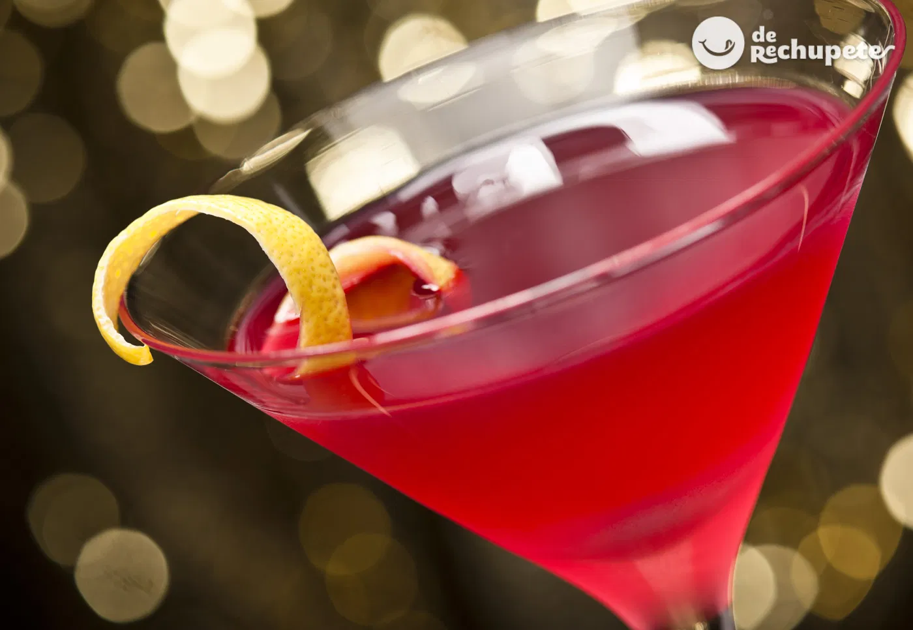

La Seduccion en tu boca
Una Bebida que solo se puede disfrutar una vez en la vida
El Cosmopolitan (o "Cosmo") es un cóctel clásico, elegante y equilibrado que combina notas cítricas con un toque dulce y ácido. Su popularidad se disparó en los años 90 gracias a la serie Sex and the City. Aquí tienes la receta estándar basada en las proporciones de la International Bartenders Association (IBA): Ingredientes 40 ml (1 1/3 oz) de Vodka Citrón (o vodka neutro de alta calidad). 15 ml (1/2 oz) de Licor de Naranja (Cointreau o Triple Sec). 15 ml (1/2 oz) de Zumo de lima recién exprimido. 30 ml (1 oz) de Zumo de arándanos rojos (cranberry). Hielo en cubitos. Decoración: Una cáscara de naranja o una rodaja de lima.
Leer mas